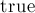

MAXimal
добавлено: 11 Jun 2008 10:22
редактировано: 20 Jun 2011 1:15
Содержание [скрыть]
Пересечение двух отрезков
Даны два отрезка  и (они могут вырождаться в точки). Требуется найти их пересечение: оно может быть пустым (если отрезки не пересекаются), может быть одной точкой, и может быть целым отрезком (если отрезки накладываются друг на друга).
и (они могут вырождаться в точки). Требуется найти их пересечение: оно может быть пустым (если отрезки не пересекаются), может быть одной точкой, и может быть целым отрезком (если отрезки накладываются друг на друга).
Алгоритм
Работать с отрезками будем как с прямыми: построим по двум отрезкам уравнения их прямых, проверим, не параллельны ли прямые. Если прямые не параллельны, то всё просто: находим их точку пересечения и проверяем, что она принадлежит обоим отрезкам (для этого достаточно проверить, что точка принадлежит каждому отрезку в проекции на ось  и на ось по отдельности). В итоге в этом случае ответом будет либо "пусто", либо единственная найденная точка.
и на ось по отдельности). В итоге в этом случае ответом будет либо "пусто", либо единственная найденная точка.
Более сложный случай — если прямые оказались параллельными (сюда же относится случай, когда один или оба отрезка выродились в точки). В этом случае надо проверить, что оба отрезка лежат на одной прямой (или, в случае когда они оба вырождены в точку — что эта точка совпадает). Если это не так, то ответ — "пусто". Если это так, то ответ — это пересечение двух отрезков, лежащих на одной прямой, что реализуется достаточно просто — надо взять максимум из левых концов и минимум из правых концов.
В самом начале алгоритма напишем так называемую "проверку на bounding box" — во-первых, она необходима для случая, когда два отрезка лежат на одной прямой, а во-вторых, она, как легковесная проверка, позволяет алгоритму работать в среднем быстрее на случайных тестах.
Реализация
Приведём здесь полную реализацию, включая все вспомогательные функции по работе с точками и прямыми.
Главной здесь является функция , которая пересекает два переданных ей отрезка, и если они пересекаются хотя бы по одной точке, то возвращает , а в аргументах и возвращает начало и конец отрезка-ответа (в частности, когда ответ — это единственная точка, возвращаемые начало и конец будут совпадать).
const double EPS = 1E-9; struct pt { double x, y; bool operator< (const pt & p) const { return x < p.x-EPS || abs(x-p.x) < EPS && y < p.y - EPS; } }; struct line { double a, b, c; line() {} line (pt p, pt q) { a = p.y - q.y; b = q.x - p.x; c = - a * p.x - b * p.y; norm(); } void norm() { double z = sqrt (a*a + b*b); if (abs(z) > EPS) a /= z, b /= z, c /= z; } double dist (pt p) const { return a * p.x + b * p.y + c; } }; #define det(a,b,c,d) (a*d-b*c) inline bool betw (double l, double r, double x) { return min(l,r) <= x + EPS && x <= max(l,r) + EPS; } inline bool intersect_1d (double a, double b, double c, double d) { if (a > b) swap (a, b); if (c > d) swap (c, d); return max (a, c) <= min (b, d) + EPS; } bool intersect (pt a, pt b, pt c, pt d, pt & left, pt & right) { if (! intersect_1d (a.x, b.x, c.x, d.x) || ! intersect_1d (a.y, b.y, c.y, d.y)) return false; line m (a, b); line n (c, d); double zn = det (m.a, m.b, n.a, n.b); if (abs (zn) < EPS) { if (abs (m.dist (c)) > EPS || abs (n.dist (a)) > EPS) return false; if (b < a) swap (a, b); if (d < c) swap (c, d); left = max (a, c); right = min (b, d); return true; } else { left.x = right.x = - det (m.c, m.b, n.c, n.b) / zn; left.y = right.y = - det (m.a, m.c, n.a, n.c) / zn; return betw (a.x, b.x, left.x) && betw (a.y, b.y, left.y) && betw (c.x, d.x, left.x) && betw (c.y, d.y, left.y); } }